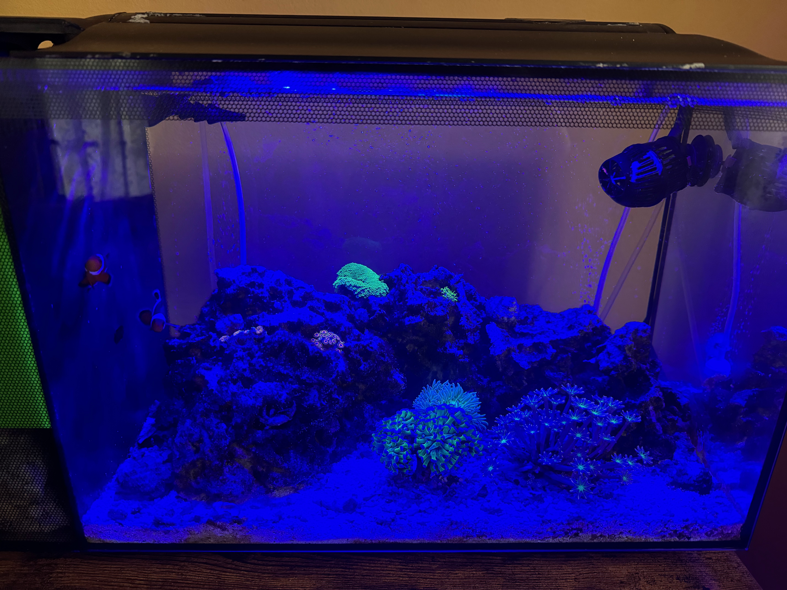
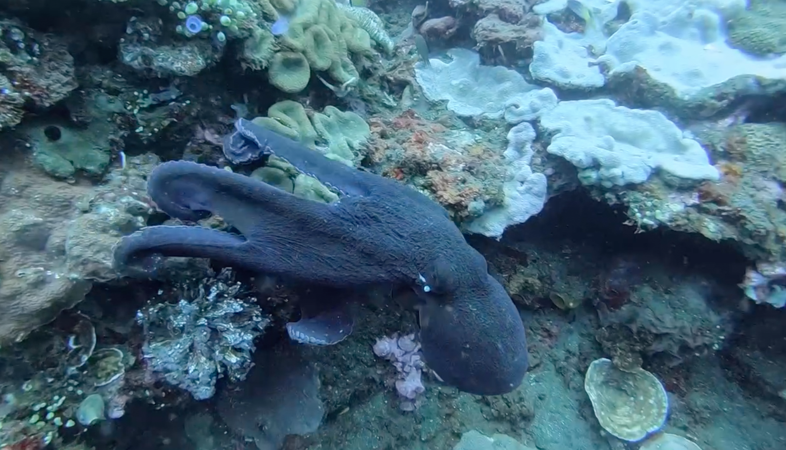

Here are some some things I enjoy in my freetime!
Salt Water Aquariums
Over the past few years I have been really enjoying setting up and maintaining salt water reef aquariums. Currently, I only have one salt-water tank, but am planning out the design of another, much larger, tank. My current tank is ~15 gallons and has a variety of life! As far as animals go, I currently have 2 clown fish, a six-line wrasse, 2 hermit crabs, an emerald crab, 2 turbo snails, and a plethera of other smaller snails. I also have a variety of corals throughout the tank and am planning on getting an anenome soon for the clownfish to host.
Camping
I also really enjoy camping with my wife and dog. We have a renovated van that we built togehter and have traveled all over the country in. We even drove the van out to California to get married and camped along the way! Being outdoors is one of my favorite things to do, especially when there are scenic views!

Scuba Diving
I went on my first discover scuba dive about 8 years ago and fell in love with the hobby! I almost immediately got certified and have been diving all over the world since. Recently my wife and I went on our honeymoon to Bali and were able to go diving all over the country. We saw all kinds of marine life and amazing coral reefs. One of the most amazing creatures we saw while there were a plethera of octopi. Their ability to change colors so rapidly is one of the more impressive things I have seen.
